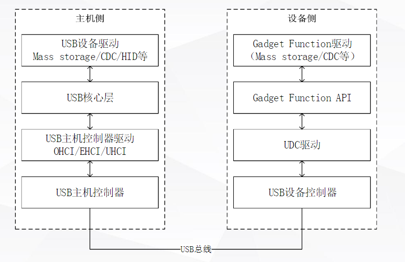
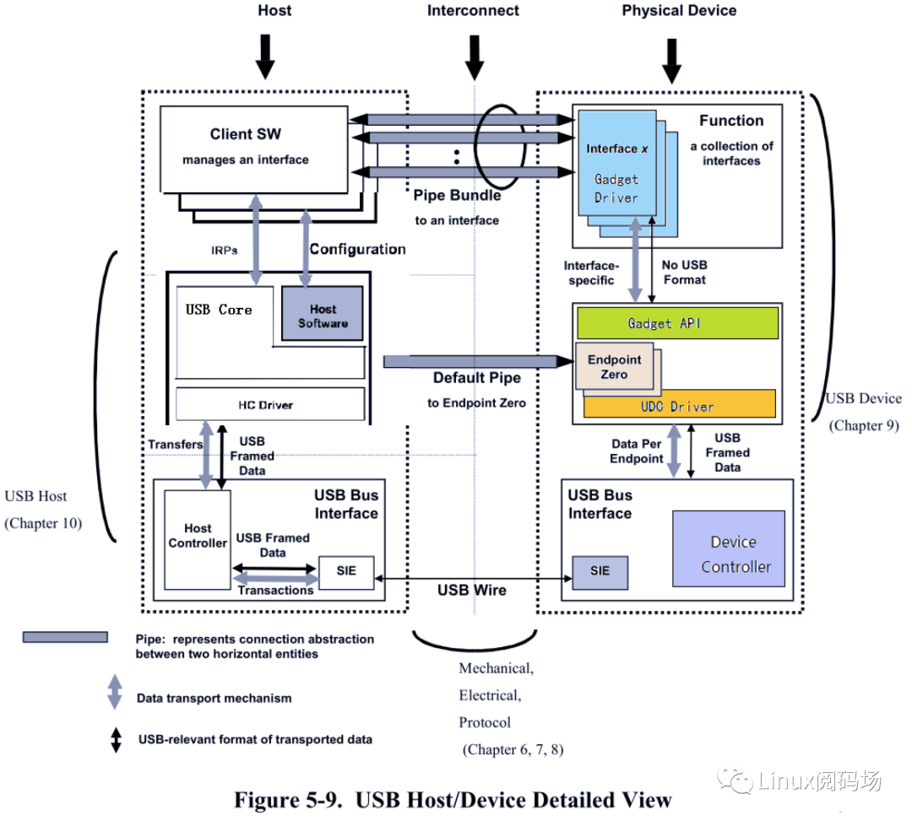
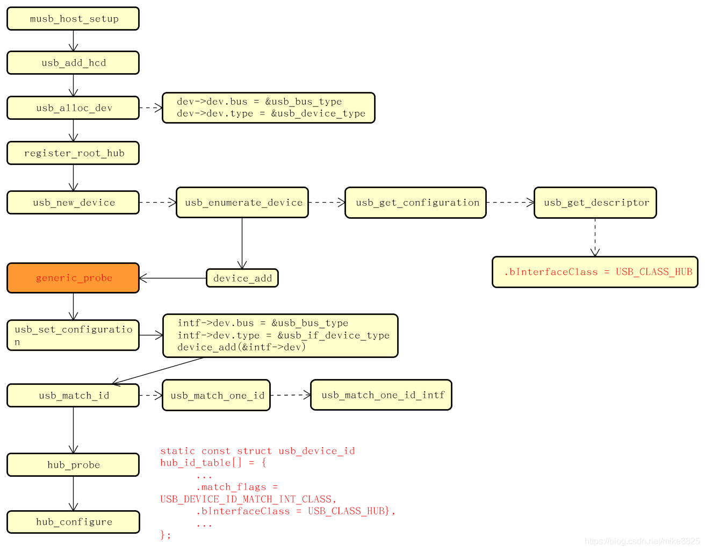
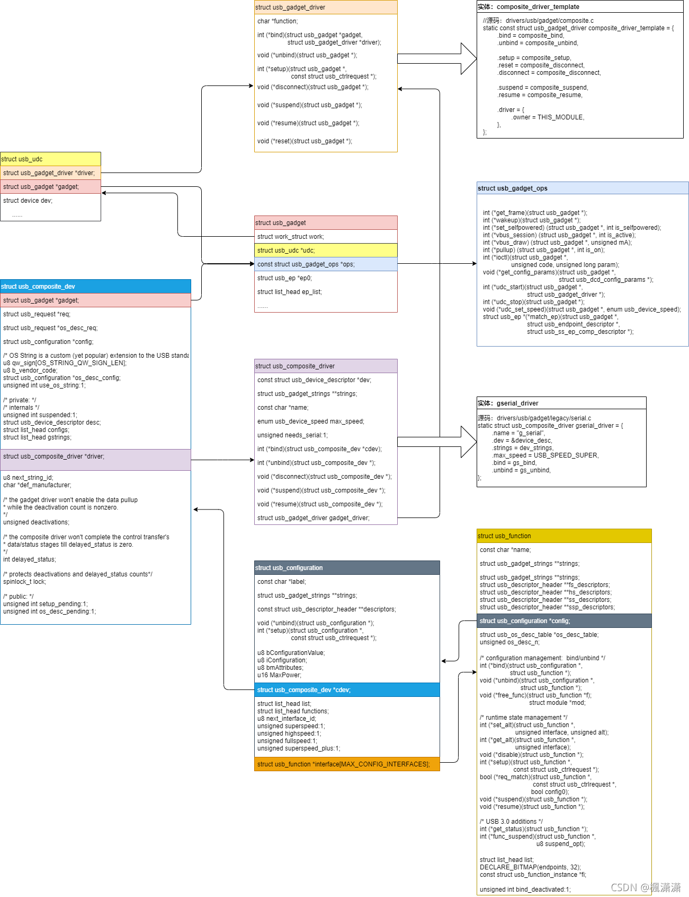

README
musb驱动分析。
refers
Multipoint USB Highspeed Dual-Role Controller (MUSB HDRC)
HCD(host controller device/主)
OHCI(open host controller inferface)
UHCI(universal host controller interface)
EHCI(enhanced host controller interface)
xHCI(eXtensible Host Controller Interface)
UDC(usb device controllerr/从)
名词解释
这里就简单列一下各种xHCI（也包括真正的xHCI）的基本含义吧。
简单地讲，OHCI、UHCI都是USB1.1的接口标准，而EHCI是对应USB2.0的接口标准，最新的xHCI是USB3.0的接口标准。
OHCI（Open Host Controller Interface）是支持USB1.1的标准，但它不仅仅是针对USB，还支持其他的一些接口，比如它还支持Apple的火线（Firewire，IEEE 1394）接口。与UHCI相比，OHCI的硬件复杂，硬件做的事情更多，所以实现对应的软件驱动的任务，就相对较简单。主要用于非x86的USB，如扩展卡、嵌入式开发板的USB主控。
UHCI（Universal Host Controller Interface），是Intel主导的对USB1.0、1.1的接口标准，与OHCI不兼容。UHCI的软件驱动的任务重，需要做得比较复杂，但可以使用较便宜、较简单的硬件的USB控制器。Intel和VIA使用UHCI，而其余的硬件提供商使用OHCI。
EHCI（Enhanced Host Controller Interface），是Intel主导的USB2.0的接口标准。EHCI仅提供USB2.0的高速功能，而依靠UHCI或OHCI来提供对全速（full-speed）或低速（low-speed）设备的支持。
xHCI（eXtensible Host Controller Interface），是最新最火的USB3.0的接口标准，它在速度、节能、虚拟化等方面都比前面3中有了较大的提高。xHCI 支持所有种类速度的USB设备（USB 3.0 SuperSpeed, USB 2.0 Low-, Full-, and High-speed, USB 1.1 Low- and Full-speed）。xHCI的目的是为了替换前面3中（UHCI/OHCI/EHCI）。
整体架构
 
整个 USB 系统的通讯模型如上图所示，
cfg信息
cfg:
CONFIG_USB_MTK_HDRC=y
CONFIG_MTK_MUSB_QMU_SUPPORT=y
CONFIG_MTK_MUSB_QMU_PURE_ZLP_SUPPORT=y
CONFIG_MTK_MUSB_DRV_36BIT=y
CONFIG_USB_MTK_OTG=y
Kconfig:
涉及文件：
wugn@jcrj-tf-compile:kernel-4.19$ cd drivers/misc/mediatek/usb20/
wugn@jcrj-tf-compile:usb20$ tree
.
├── Kconfig
├── Makefile
├── mt6765
│ ├── Makefile
│ ├── mtk-phy-a60810.h
│ ├── otg.c
│ ├── usb20.c
│ ├── usb20.h
│ ├── usb20_host.c
│ ├── usb20_otg_if.c
│ ├── usb20_phy.c
│ └── usb20_phy_debugfs.c
├── mtk_dual_role.c
├── mtk_musb.h
├── mtk_musb_reg.h
├── mtk_qmu.c
├── mtk_qmu.h
├── musb_core.c //入口驱动
├── musb_core.h
├── musb_debugfs.c
├── musb_debug.h
├── musb_dma.h
├── musb_gadget.c //从控制器
├── musb_gadget_ep0.c
├── musb_gadget.h
├── musb.h
├── musb_host.c //主控制器
├── musb_host.h
├── musbhsdma.c
├── musbhsdma.h
├── musb_io.h
├── musb_qmu.c
├── musb_qmu.h
└── musb_virthub.c
#Platform
obj-$(CONFIG_MACH_MT6765) += $(subst ",,$(CONFIG_MTK_PLATFORM))/ 就是mt6765文件
#Driver
obj-$(CONFIG_USB_MTK_HDRC) += musb_hdrc.o
musb_hdrc-$(CONFIG_USB_MTK_HDRC) := musb_core.o
musb_hdrc-$(CONFIG_USB_MTK_HDRC) += musb_gadget_ep0.o musb_gadget.o
musb_hdrc-$(CONFIG_USB_MTK_HDRC) += musb_virthub.o musb_host.o
musb_hdrc-$(CONFIG_USB_MTK_HDRC) += musbhsdma.o
# QMU Realted
obj-$(CONFIG_MTK_MUSB_QMU_SUPPORT) += mtk_qmu.o musb_qmu.o
ifeq ($(CONFIG_MTK_MUSB_QMU_SUPPORT),y)
subdir-ccflags-$(CONFIG_MACH_MT8163) += -DMUSB_QMU_LIMIT_SUPPORT -DMUSB_QMU_LIMIT_RXQ_NUM=4 -DMUSB_QMU_LIMIT_TXQ_NUM=4
endif
ifeq ($(CONFIG_MTK_MUSB_QMU_SUPPORT),y)
subdir-ccflags-$(CONFIG_MACH_MT8167) += -DMUSB_QMU_LIMIT_SUPPORT -DMUSB_QMU_LIMIT_RXQ_NUM=4 -DMUSB_QMU_LIMIT_TXQ_NUM=4
endif
dts：
usb: usb0@11200000 {
compatible = "mediatek,mt6765-usb20";
reg = <0 0x11200000 0 0x10000>,
<0 0x11CC0000 0 0x10000>;
interrupts = <GIC_SPI 73 IRQ_TYPE_LEVEL_LOW>;
mode = <2>;
multipoint = <1>;
num_eps = <16>;
clocks = <&infracfg_ao CLK_IFR_ICUSB>,
<&topckgen CLK_TOP_USB_TOP_SEL>,
<&topckgen CLK_TOP_UNIVPLL3_D4>;
clock-names = "usb0",
"usb0_clk_top_sel",
"usb0_clk_univpll3_d4";
charger = <&mt6370_chg>;
};
修改usb驱动能力：
&usb {
usb_tuning {
compatible = "mediatek,phy_tuning";
u2_vrt_ref = <7>;
u2_term_ref = <0>;
};
};
默认host模式：
&usb {
bootmode = <&chosen>;
default_mode = <1>; //0-device mode, 1-host mode
pogo_dev_detect_type = <2>;
};
软件流程
总体流程图如下：

musb_core注册过程
musb_core.cplatform driver注册如下，名称为musb-hdrc:
#define MUSB_DRIVER_NAME "musb-hdrc"
const char musb_driver_name[] = MUSB_DRIVER_NAME;
static struct platform_driver musb_driver = {
.driver = {
.name = (char *)musb_driver_name,
.bus = &platform_bus_type,
#if (!defined(CONFIG_MACH_MT2701)) && (!defined(CONFIG_ARCH_MT7623))
.of_match_table = apusb_of_ids,
#endif
.owner = THIS_MODULE,
.pm = MUSB_DEV_PM_OPS,
},
.probe = musb_probe,
.remove = musb_remove,
.shutdown = musb_shutdown,
};
/*-------------------------------------------------------------------------*/
static int __init musb_init(void)
{
if (usb_disabled())
return 0;
pr_info("%s: version " MUSB_VERSION ", ?dma?, otg (peripheral+host)\n"
, musb_driver_name);
return platform_driver_register(&musb_driver);
}
usb20注册musb-hdrc（musb_core）的platform device
首先注册platform驱动为mt_usb：
static struct platform_driver mt_usb_driver = {
.remove = mt_usb_remove,
.probe = mt_usb_probe,
.driver = {
.name = "mt_usb",
.of_match_table = apusb_of_ids,
},
};
static int __init usb20_init(void)
{
int ret;
DBG(0, "usb20 init\n");
#ifdef CONFIG_MTK_USB2JTAG_SUPPORT
if (usb2jtag_mode()) {
pr_notice("[USB2JTAG] in usb2jtag mode, not to initialize usb driver\n");
return 0;
}
#endif
ret = platform_driver_register(&mt_usb_driver);
#ifdef FPGA_PLATFORM
add_usb_i2c_driver();
#endif
DBG(0, "usb20 init ret:%d\n", ret);
return ret;
}
probe中注册musb-hdrc驱动(usb_core)的platform_device，最主要目的是让musb-hdrc驱动能够调用mt_usb_ops操作mtk平台usb：
发现mt_usb platform_device包含有musb-hdrc的platform_device:
PAYPHONEM50:/sys/devices/platform/mt_usb/musb-hdrc # ls -l
total 0
-rw-rw-r-- 1 root system 4096 2010-01-01 00:00 cmode
lrwxrwxrwx 1 root root 0 2022-06-24 08:06 driver -> ../../../../bus/platform/drivers/musb-hdrc
-rw-r--r-- 1 root root 4096 2022-06-24 08:06 driver_override
drwxr-xr-x 3 root root 0 2010-01-01 00:00 gadget
-r--r--r-- 1 root root 4096 2022-06-24 08:06 modalias
-r--r--r-- 1 root root 4096 2022-06-24 08:06 pools
drwxr-xr-x 2 root root 0 2010-01-01 00:00 power
lrwxrwxrwx 1 root root 0 2022-06-24 08:06 subsystem -> ../../../../bus/platform
drwxr-xr-x 3 root root 0 2010-01-01 00:00 udc
-rw-r--r-- 1 root root 4096 2010-01-01 00:00 uevent
drwxr-xr-x 5 root root 0 2010-01-01 00:00 usb1
static const struct musb_platform_ops mt_usb_ops = {
.init = mt_usb_init,
.exit = mt_usb_exit,
/*.set_mode = mt_usb_set_mode, */
#if defined(CONFIG_MTK_BASE_POWER)
.try_idle = mt_usb_try_idle,
#endif
.enable = mt_usb_enable,
.disable = mt_usb_disable,
/* .set_vbus = mt_usb_set_vbus, */
.vbus_status = mt_usb_get_vbus_status,
.enable_clk = mt_usb_enable_clk,
.disable_clk = mt_usb_disable_clk,
.prepare_clk = mt_usb_prepare_clk,
.unprepare_clk = mt_usb_unprepare_clk,
};
static int mt_usb_probe(struct platform_device *pdev)
{
struct musb_hdrc_platform_data *pdata = pdev->dev.platform_data;
musb = platform_device_alloc("musb-hdrc", PLATFORM_DEVID_NONE); //动态分配musb-hdrcd的一个struct platform_device变量。
if (!musb) {
dev_notice(&pdev->dev, "failed to allocate musb device\n");
goto err1;
}
usb_phy_base = of_iomap(np, 1);
pdata = devm_kzalloc(&pdev->dev, sizeof(*pdata), GFP_KERNEL);
if (!pdata) {
dev_notice(&pdev->dev, "failed to allocate musb platform data\n");
goto err2;
}
config = devm_kzalloc(&pdev->dev, sizeof(*config), GFP_KERNEL);
if (!config) {
/* dev_notice(&pdev->dev,
* "failed to allocate musb hdrc config\n");
*/
goto err2;
}
pdata->config = config;
musb->dev.parent = &pdev->dev;
musb->dev.dma_mask = &mt_usb_dmamask;
musb->dev.coherent_dma_mask = mt_usb_dmamask;
pdev->dev.dma_mask = &mt_usb_dmamask;
pdev->dev.coherent_dma_mask = mt_usb_dmamask;
arch_setup_dma_ops(&musb->dev, 0, mt_usb_dmamask, NULL, 0);
glue->dev = &pdev->dev;
glue->musb = musb; //glue作为
pdata->platform_ops = &mt_usb_ops;
ret = device_rename(&pdev->dev, "mt_usb"); //名字改回来了
if (ret)
dev_notice(&pdev->dev, "failed to rename\n");
/*
* fix uaf(use afer free) issue:backup pdev->name,
* device_rename will free pdev->name
*/
pdev->name = pdev->dev.kobj.name;
platform_set_drvdata(pdev, glue);
ret = platform_device_add_resources(musb,
pdev->resource, pdev->num_resources); //向platform device中增加资源描述。
if (ret) {
dev_notice(&pdev->dev, "failed to add resources\n");
goto err2;
}
ret = platform_device_add_data(musb, pdata, sizeof(*pdata)); //向platform device中添加自定义的数据，最主要是的mt_usb_ops
if (ret) {
dev_notice(&pdev->dev, "failed to add platform_data\n");
goto err2;
}
ret = platform_device_add(musb);// 注册musb-hdrc的platform device
if (ret) {
dev_notice(&pdev->dev, "failed to register musb device\n");
goto err2;
}
}
musb_core.c和musb20.c关系及probe流程
1.在mt6765目录下的usb20.c中的mt_usb_probe函数中,musb_hdrc_platform_data类型的结构中的指针成员platform_ops指向musb_platform_ops类型的mt_usb_ops结构。 2.之后通过platform_device_add_data函数将platform device结构中的device结构中的指针platform_data成员指向musb_hdrc_platform_data类型的结构。
static int mt_usb_probe(struct platform_device *pdev)
{
struct musb_hdrc_platform_data *pdata = pdev->dev.platform_data;
pdata->platform_ops = &mt_usb_ops;
ret = platform_device_add_data(musb, pdata, sizeof(*pdata)); //向platform device中添加自定义的数据，最主要是的mt_usb_ops
}
3.在musb core驱动的musb_probe中根据platform_device结构（就是usb20.c中的mt musb controller），获得这个结构中的device类型结构给musb_init_controller，在这个函数中，根据参数device类型的结构中的platform_data指针得到一个musb_hdrc_platform_data类型的结构，这个结构中有一个musb_hdrc_config类型的成员，根据这个成员和musb controller寄存器起始地址，通过allocate_instance创建一个musb结构。创建这个musb结构时，设置musb中的mregs成员为参数中的musb controller寄存器base address。然后在musb_init_controller函数中，将分配得到的musb结构中的musb_platform_ops类型的成员ops设置为musb_hdrc_platform_data中的platform_ops指针。然后根据musb执行musb_platform_init。
在这个函数中，执行musb中的musb_platform_ops类型的成员ops中的init函数。
* musb_probe(struct platform_device *pdev)
* iomem = platform_get_resource(pdev, IORESOURCE_MEM, 0);
* base = devm_ioremap(dev, iomem->start, resource_size(iomem)); //上面两段程序能够获取usb20.c驱动里面的ops，也就是申请并映射usb20.c驱动的device resource
* musb_init_controller(dev, irq, base, pbase); //获得这个结构中的device类型结构dev给musb_init_controller
* struct musb_hdrc_platform_data *plat = dev->platform_data; //根据参数device类型的结构中的platform_data指针得到一个musb_hdrc_platform_data类型的结构
* musb = allocate_instance(dev, plat->config, ctrl); //创建musb结构？？
* hcd = usb_create_hcd(&musb_hc_driver, dev, dev_name(dev)); //实例化主控制器，musb_host.c
* musb = hcd_to_musb(hcd);
* musb->mregs = mbase; //设置musb中的mregs成员为参数中的musb controller寄存器base address
* musb->ops = plat->platform_ops; //将分配得到的musb结构中的musb_platform_ops类型的成员ops设置为musb_hdrc_platform_data中的platform_ops指针
* musb->default_mode = plat->default_mode; //设置默认模式
* musb_platform_prepare_clk(musb);
* musb->ops->prepare_clk(musb);
* .prepare_clk = mt_usb_prepare_clk, //usb20.c mt_usb_ops
* musb_core_init(plat->config->multipoint? MUSB_CONTROLLER_MHDRC : MUSB_CONTROLLER_HDRC, musb);/* setup musb parts of the core (especially endpoints) */
* .init = mt_usb_init,//usb20.c mt_usb_ops 非常重要
* musb_platform_enable(musb);
* .enable = mt_usb_enable,
musb_core musb_core_init流程
前面讲了usb20注册musb-hdrc（musb_core）的platform device，这样musb_core就能调用到usb20的ops，musb_core_init就是调用musb20驱动里面的mt_usb_init函数，具体看看：
static int __init mt_usb_init(struct musb *musb)
{
int ret;
DBG(1, "%s\n", __func__);
usb_phy_generic_register();
musb->xceiv = usb_get_phy(USB_PHY_TYPE_USB2);
if (IS_ERR_OR_NULL(musb->xceiv)) {
DBG(0, "[MUSB] usb_get_phy error!!\n");
return -EPROBE_DEFER;
}
musb->dma_irq = (int)SHARE_IRQ;
musb->fifo_cfg = fifo_cfg;
musb->fifo_cfg_size = ARRAY_SIZE(fifo_cfg);
musb->dyn_fifo = true;
musb->power = false;
musb->is_host = false;
musb->fifo_size = 8 * 1024;
#ifndef FPGA_PLATFORM
musb->usb_rev6_setting = usb_rev6_setting;
#endif
musb->usb_lock = wakeup_source_register(NULL, "USB suspend lock");
#ifndef FPGA_PLATFORM
reg_vusb = regulator_get(musb->controller, "vusb");
if (!IS_ERR(reg_vusb)) {
#ifdef NEVER
#define VUSB33_VOL_MIN 3070000
#define VUSB33_VOL_MAX 3070000
ret = regulator_set_voltage(reg_vusb,
VUSB33_VOL_MIN, VUSB33_VOL_MAX); //设置usb vbus电压范围
if (ret < 0)
pr_notice("regulator set vol failed: %d\n", ret);
else
DBG(0, "regulator set vol ok, <%d,%d>\n",
VUSB33_VOL_MIN, VUSB33_VOL_MAX);
#endif /* NEVER */
ret = regulator_enable(reg_vusb); //使能
if (ret < 0) {
pr_notice("regulator_enable vusb failed: %d\n", ret);
regulator_put(reg_vusb);
}
} else
pr_notice("regulator_get vusb failed\n");
reg_va12 = regulator_get(musb->controller, "va12");
if (!IS_ERR(reg_va12)) {
ret = regulator_enable(reg_va12);
if (ret < 0) {
pr_notice("regulator_enable va12 failed: %d\n", ret);
regulator_put(reg_va12);
}
} else
pr_notice("regulator_get va12 failed\n");
#endif
ret = device_create_file(musb->controller, &dev_attr_cmode);
/* mt_usb_enable(musb); */
musb->isr = mt_usb_interrupt; //配置usb中断函数
musb_writel(musb->mregs,
MUSB_HSDMA_INTR, 0xff |
(0xff << DMA_INTR_UNMASK_SET_OFFSET));
DBG(1, "musb platform init %x\n",
musb_readl(musb->mregs, MUSB_HSDMA_INTR));
#ifdef CONFIG_MTK_MUSB_QMU_SUPPORT
/* FIXME, workaround for device_qmu + host_dma */
musb_writel(musb->mregs,
USB_L1INTM,
TX_INT_STATUS |
RX_INT_STATUS |
USBCOM_INT_STATUS |
DMA_INT_STATUS |
QINT_STATUS);
#else
musb_writel(musb->mregs,
USB_L1INTM,
TX_INT_STATUS |
RX_INT_STATUS |
USBCOM_INT_STATUS |
DMA_INT_STATUS);
#endif
#if defined(CONFIG_MTK_BASE_POWER)
timer_setup(&musb->idle_timer, musb_do_idle, 0);
#endif
#ifdef CONFIG_USB_MTK_OTG
mt_usb_otg_init(musb); //这里很重要，使能otg功能，也就是根据cc/id脚切换device/host
#endif
#ifdef CONFIG_MACH_MT6761
/* only for mt6761 */
usb_sram_init();
#endif
mt_usb_psy_init(musb); //这里也是
return 0;
}
mt_usb_interrupt中断函数
这里是处理usb中断的，包括irq sources (phy, dma, etc)，这块暂时没研究。
static irqreturn_t mt_usb_interrupt(int irq, void *dev_id)
{
irqreturn_t tmp_status;
irqreturn_t status = IRQ_NONE;
struct musb *musb = (struct musb *)dev_id;
u32 usb_l1_ints;
unsigned long flags;
spin_lock_irqsave(&musb->lock, flags);
usb_l1_ints = musb_readl(musb->mregs, USB_L1INTS) &
musb_readl(mtk_musb->mregs, USB_L1INTM);
DBG(1, "usb interrupt assert %x %x %x %x %x %x %x\n", usb_l1_ints,
musb_readl(mtk_musb->mregs, USB_L1INTM),
musb_readb(musb->mregs, MUSB_INTRUSBE),
musb_readw(musb->mregs, MUSB_INTRTX),
musb_readw(musb->mregs, MUSB_INTRTXE),
musb_readw(musb->mregs, MUSB_INTRRX),
musb_readw(musb->mregs, MUSB_INTRRXE));
if ((usb_l1_ints & TX_INT_STATUS) || (usb_l1_ints & RX_INT_STATUS)
|| (usb_l1_ints & USBCOM_INT_STATUS)
#ifdef CONFIG_MTK_MUSB_QMU_SUPPORT
|| (usb_l1_ints & QINT_STATUS)
#endif
) {
tmp_status = generic_interrupt(irq, musb);
if (tmp_status != IRQ_NONE)
status = tmp_status;
}
spin_unlock_irqrestore(&musb->lock, flags);
/* FIXME, workaround for device_qmu + host_dma */
/* #ifndef CONFIG_MTK_MUSB_QMU_SUPPORT */
if (usb_l1_ints & DMA_INT_STATUS) {
tmp_status = dma_controller_irq(irq, musb->dma_controller);
if (tmp_status != IRQ_NONE)
status = tmp_status;
}
return status;
}
* generic_interrupt(int irq, void *__hci)
* musb_interrupt(musb);
/*
* handle all the irqs defined by the HDRC core. for now we expect: other
* irq sources (phy, dma, etc) will be handled first, musb->int_* values
* will be assigned, and the irq will already have been acked.
*
* called in irq context with spinlock held, irqs blocked
*/
irqreturn_t musb_interrupt(struct musb *musb)
{
irqreturn_t retval = IRQ_NONE;
u8 devctl;
int ep_num;
u32 reg;
devctl = musb_readb(musb->mregs, MUSB_DEVCTL);
#ifdef CONFIG_MTK_MUSB_QMU_SUPPORT
DBG(1, "usb(%x) tx(%x) rx(%x) queue(%x)\n",
musb->int_usb, musb->int_tx, musb->int_rx, musb->int_queue);
#else
DBG(1, "** IRQ %s usb%04x tx%04x rx%04x\n",
(devctl & MUSB_DEVCTL_HM) ? "host" : "peripheral",
musb->int_usb, musb->int_tx, musb->int_rx);
#endif
dumpTime(funcInterrupt, 0);
if (unlikely(!musb->softconnect && !(devctl & MUSB_DEVCTL_HM))) {
DBG(0, "!softconnect, IRQ usb%04x tx%04x rx%04x\n",
musb->int_usb, musb->int_tx, musb->int_rx);
return IRQ_HANDLED;
}
/* the core can interrupt us for multiple reasons; docs have
* a generic interrupt flowchart to follow
*/
if (musb->int_usb)
retval |= musb_stage0_irq(musb, musb->int_usb, devctl);
/* "stage 1" is handling endpoint irqs */
/* handle endpoint 0 first */
if (musb->int_tx & 1) {
if (devctl & MUSB_DEVCTL_HM)
retval |= musb_h_ep0_irq(musb);
else
retval |= musb_g_ep0_irq(musb);
}
if (unlikely(!musb->power))
return IRQ_HANDLED;
#ifdef CONFIG_MTK_MUSB_QMU_SUPPORT
/* process generic queue interrupt */
if (musb->int_queue) {
musb_q_irq(musb);
retval = IRQ_HANDLED;
}
#endif
/* FIXME, workaround for device_qmu + host_dma */
/* #ifndef MUSB_QMU_SUPPORT */
/* RX on endpoints 1-15 */
reg = musb->int_rx >> 1;
ep_num = 1;
while (reg) {
if (reg & 1) {
/* musb_ep_select(musb->mregs, ep_num); */
/* REVISIT just retval = ep->rx_irq(...) */
retval = IRQ_HANDLED;
if (devctl & MUSB_DEVCTL_HM)
musb_host_rx(musb, ep_num);
else
musb_g_rx(musb, ep_num);
}
reg >>= 1;
ep_num++;
}
/* TX on endpoints 1-15 */
reg = musb->int_tx >> 1;
ep_num = 1;
while (reg) {
if (reg & 1) {
/* musb_ep_select(musb->mregs, ep_num); */
/* REVISIT just retval |= ep->tx_irq(...) */
retval = IRQ_HANDLED;
if (devctl & MUSB_DEVCTL_HM) {
bool skip_tx = false;
static DEFINE_RATELIMIT_STATE(rlmt, HZ, 2);
static int skip_cnt;
if (musb_host_db_enable && host_tx_refcnt_dec(ep_num) < 0) {
int ref_cnt;
musb_host_db_workaround_cnt++;
ref_cnt = host_tx_refcnt_inc(ep_num);
if (__ratelimit(&rlmt)) {
DBG(0,
"unexpect TX <%d,%d,%d>\n",
ep_num, ref_cnt,
skip_cnt);
dump_tx_ops(ep_num);
skip_cnt = 0;
} else
skip_cnt++;
skip_tx = true;
}
if (likely(!skip_tx))
musb_host_tx(musb, ep_num);
} else
musb_g_tx(musb, ep_num);
}
reg >>= 1;
ep_num++;
}
return retval;
}
otg初始化(mt_usb_otg_init)
接下来看看mt_usb_otg_init，使能otg功能，也就是根据cc/id脚切换device/host，这里定义了CONFIG_TCPC_CLASS，也就是用的typec的cc脚切主从，不会跑iddig_int_init函数，
void mt_usb_otg_init(struct musb *musb)
{
/* test */
INIT_DELAYED_WORK(&host_plug_test_work, do_host_plug_test_work);
ktime_start = ktime_get();
/* CONNECTION MANAGEMENT*/
#ifdef CONFIG_MTK_USB_TYPEC
DBG(0, "host controlled by TYPEC\n");
typec_control = 1;
#ifdef CONFIG_TCPC_CLASS
INIT_DELAYED_WORK(®ister_otg_work, do_register_otg_work);
/* Add-BEGIN by (shanliangliang@paxsz.com), 2021/08/27 fix notifier reigister too late */
schedule_delayed_work(®ister_otg_work,
msecs_to_jiffies(REGISTER_OTG_WORK_DELAY)); //重要，调用do_register_otg_work工作队列
/* Add-END by (shanliangliang@paxsz.com), 2021/08/27 fix notifier reigister too late */
vbus_control = 0;
#endif
#else
DBG(0, "host controlled by IDDIG\n");
iddig_int_init();
vbus_control = 1;
#endif
/* EP table */
musb->fifo_cfg_host = fifo_cfg_host;
musb->fifo_cfg_host_size = ARRAY_SIZE(fifo_cfg_host);
/* Add-BEGIN by (shanliangliang@paxsz.com), 2021/08/15 add for M8 usb otg */
if (musb->default_mode == MUSB_HOST) {
mt_usb_host_connect(0); //默认dts如果定义了host，则使能host
}
musb->lcd_state = FB_BLANK_UNBLANK;
fb_register_client(&musb_fb_notifier);
musb_chg_dev_init(musb);
/* Add-END by (shanliangliang@paxsz.com), 2021/08/15 add for M8 usb otg */
}
do_register_otg_work注册notify监听tcpc
1.获取typec设备名称type_c_port0，获取不到就反复schedule_delayed_work调用本身获取。 2.通过register_tcp_dev_notifier注册监听vbus和usb状态。
#define TCPC_OTG_DEV_NAME "type_c_port0"
static void do_register_otg_work(struct work_struct *data)
{
/* Add-BEGIN by (shanliangliang@paxsz.com), 2021/08/27 fix notifier reigister too late */
#define REGISTER_OTG_WORK_DELAY 200
/* Add-END by (shanliangliang@paxsz.com), 2021/08/27 fix notifier reigister too late */
static int ret;
if (!otg_tcpc_dev)
otg_tcpc_dev = tcpc_dev_get_by_name(TCPC_OTG_DEV_NAME);
if (!otg_tcpc_dev) {
DBG(0, "get type_c_port0 fail\n");
/* Add-BEGIN by (shanliangliang@paxsz.com), 2021/08/27 fix notifier reigister too late */
#if 0
queue_delayed_work(mtk_musb->st_wq, ®ister_otg_work,
msecs_to_jiffies(REGISTER_OTG_WORK_DELAY));
#else
schedule_delayed_work(®ister_otg_work,
msecs_to_jiffies(REGISTER_OTG_WORK_DELAY));
#endif
/* Add-END by (shanliangliang@paxsz.com), 2021/08/27 fix notifier reigister too late */
return;
}
otg_nb.notifier_call = otg_tcp_notifier_call;
ret = register_tcp_dev_notifier(otg_tcpc_dev, &otg_nb,
TCP_NOTIFY_TYPE_VBUS | TCP_NOTIFY_TYPE_USB |
TCP_NOTIFY_TYPE_MISC);
if (ret < 0) {
DBG(0, "register OTG <%p> fail\n", otg_tcpc_dev);
/* Add-BEGIN by (shanliangliang@paxsz.com), 2021/08/27 fix notifier reigister too late */
#if 0
queue_delayed_work(mtk_musb->st_wq, ®ister_otg_work,
msecs_to_jiffies(REGISTER_OTG_WORK_DELAY));
#else
schedule_delayed_work(®ister_otg_work,
msecs_to_jiffies(REGISTER_OTG_WORK_DELAY));
#endif
/* Add-END by (shanliangliang@paxsz.com), 2021/08/27 fix notifier reigister too late */
return;
}
DBG(0, "register OTG <%p> ok\n", otg_tcpc_dev);
}
监听函数如下：
这个地方是就是根据cc状态控制usb vbus和otg功能的，具体解释可以参考文档
usb_switch
static int otg_tcp_notifier_call(struct notifier_block *nb,
unsigned long event, void *data)
{
struct tcp_notify *noti = data;
switch (event) {
case TCP_NOTIFY_SOURCE_VBUS:
DBG(0, "source vbus = %dmv\n", noti->vbus_state.mv);
if (noti->vbus_state.mv)
mt_usb_vbus_on(0);
else
mt_usb_vbus_off(0);
break;
case TCP_NOTIFY_TYPEC_STATE:
DBG(0, "TCP_NOTIFY_TYPEC_STATE, old_state=%d, new_state=%d\n",
noti->typec_state.old_state,
noti->typec_state.new_state);
/* Add-BEGIN by (shanliangliang@paxsz.com), 2021/08/15 add for M8 usb otg */
mtk_musb->typec_state = noti->typec_state.new_state;
/* Add-END by (shanliangliang@paxsz.com), 2021/08/15 add for M8 usb otg */
if (noti->typec_state.old_state == TYPEC_UNATTACHED &&
noti->typec_state.new_state == TYPEC_ATTACHED_SRC) {
DBG(0, "OTG Plug in\n");
mt_usb_dev_disconnect();
mt_usb_host_connect(100);
/* Add-BEGIN by (shanliangliang@paxsz.com), 2021/09/23 add for M8 usb otg */
} else if (noti->typec_state.old_state == TYPEC_UNATTACHED &&
noti->typec_state.new_state == TYPEC_ATTACHED_SNK) {
if (!((mtk_musb->pogo_dev_detect_type == POGO_DETECT_BY_EXT_PIN) && (mtk_musb->pogo_dev_state == POGO_DEV_STATE_ONLINE))) {
mt_usb_host_disconnect(0);
mt_usb_connect();
}
/* Add-END by (shanliangliang@paxsz.com), 2021/09/23 add for M8 usb otg */
} else if ((noti->typec_state.old_state == TYPEC_ATTACHED_SRC ||
noti->typec_state.old_state == TYPEC_ATTACHED_SNK ||
noti->typec_state.old_state ==
TYPEC_ATTACHED_NORP_SRC) &&
noti->typec_state.new_state == TYPEC_UNATTACHED) {
/* Add-BEGIN by (shanliangliang@paxsz.com), 2021/08/15 add for M8 usb otg */
if (mtk_musb->default_mode != MUSB_HOST) {
if (is_host_active(mtk_musb)) {
DBG(0, "OTG Plug out\n");
mt_usb_host_disconnect(0);
} else {
DBG(0, "USB Plug out\n");
mt_usb_dev_disconnect();
}
if (mtk_musb->pogo_dev_detect_type != POGO_DETECT_BY_CC) {
if (mtk_musb->r15_state == R15_STATUS_ONLINE) {
mt_usb_host_connect(100);
}
}
}
else {
if ((noti->typec_state.old_state != TYPEC_ATTACHED_SRC) &&
(noti->typec_state.new_state == TYPEC_UNATTACHED)) {
if (is_host_active(mtk_musb)) {
//DBG(0, "OTG Plug out\n");
//mt_usb_host_disconnect(0);
} else {
DBG(0, "USB Plug out\n");
mt_usb_dev_disconnect();
}
if (mtk_musb->lcd_state != FB_BLANK_POWERDOWN) {
msleep(50);
mt_usb_host_connect(100);
}
}
else if ((noti->typec_state.old_state == TYPEC_ATTACHED_SRC) &&
(noti->typec_state.new_state == TYPEC_UNATTACHED)) {
if (mtk_musb->lcd_state == FB_BLANK_POWERDOWN) {
if (is_host_active(mtk_musb)) {
DBG(0, "OTG Plug out\n");
mt_usb_host_disconnect(10000);
} else {
DBG(0, "USB Plug out\n");
mt_usb_dev_disconnect();
}
}
}
}
if (mtk_musb->pogo_dev_detect_type == POGO_DETECT_BY_CC) {
if (mtk_musb->r15_state == R15_STATUS_ONLINE) {
mtk_musb->r15_state = R15_STATUS_OFFLINE;
}
}
/* Add-END by (shanliangliang@paxsz.com), 2021/08/15 add for M8 usb otg */
#ifdef CONFIG_MTK_UART_USB_SWITCH
} else if ((noti->typec_state.new_state ==
TYPEC_ATTACHED_SNK ||
noti->typec_state.new_state ==
TYPEC_ATTACHED_CUSTOM_SRC ||
noti->typec_state.new_state ==
TYPEC_ATTACHED_NORP_SRC) &&
in_uart_mode) {
pr_info("%s USB cable plugged-in in UART mode.
Switch to USB mode.\n", __func__);
usb_phy_switch_to_usb();
#endif
}
break;
case TCP_NOTIFY_DR_SWAP:
DBG(0, "TCP_NOTIFY_DR_SWAP, new role=%d\n",
noti->swap_state.new_role);
if (is_host_active(mtk_musb) &&
noti->swap_state.new_role == PD_ROLE_UFP) {
if (!((mtk_musb->default_mode == MUSB_HOST) && (mtk_musb->usb_type == POWER_SUPPLY_USB_TYPE_DCP))) {
DBG(0, "switch role to device\n");
mt_usb_host_disconnect(0);
mt_usb_connect();
}
} else if (is_peripheral_active(mtk_musb) &&
noti->swap_state.new_role == PD_ROLE_DFP) {
DBG(0, "switch role to host\n");
mt_usb_dev_disconnect();
mt_usb_host_connect(100);
}
break;
}
return NOTIFY_OK;
}
host/device切换底层原理
可以看到主要是以下几种切换逻辑：
dev -> host
mt_usb_dev_disconnect();
mt_usb_host_connect(100);
host -> dev
mt_usb_host_disconnect(0);
mt_usb_connect();
host Plug out:
mt_usb_host_disconnect(0);
dev Plog out:
mt_usb_dev_disconnect();
1.device切换原理
device的connect和disconnect都是通过issue_connection_work(CONNECTION_OPS_CONN)实现的，看一下具体内容：
usb操作主要有以下三种：
/* specific USB operation */
enum CONNECTION_OPS {
CONNECTION_OPS_DISC = 0,
CONNECTION_OPS_CHECK,
CONNECTION_OPS_CONN
};
1.usb_prepare_clock初始化时钟。 2.usb_connected状态是读取charger bc1.2检测，如果检测到是dcp sdp则表示连接上，这个仅供检查使用(CONNECTION_OPS_CHECK)。 3.is_host，如果这个时候要切host，则立即返回。 4.如果是CONNECTION_OPS_CONN指令则enable interrupts, dma, etc，否则disable interrupts, dma, etc。
static void issue_connection_work(int ops)
{
struct mt_usb_work *work;
if (!mtk_musb) {
DBG(0, "mtk_musb = NULL\n");
return;
}
/* create and prepare worker */
work = kzalloc(sizeof(struct mt_usb_work), GFP_ATOMIC);
if (!work) {
DBG(0, "wrap is NULL, directly return\n");
return;
}
work->ops = ops;
INIT_DELAYED_WORK(&work->dwork, do_connection_work);
/* issue connection work */
DBG(0, "issue work, ops<%d>\n", ops);
queue_delayed_work(mtk_musb->st_wq, &work->dwork, 0);
}
void do_connection_work(struct work_struct *data)
{
unsigned long flags = 0;
int usb_clk_state = NO_CHANGE;
bool usb_on, usb_connected;
struct mt_usb_work *work =
container_of(data, struct mt_usb_work, dwork.work);
DBG(0, "is_host<%d>, power<%d>, ops<%d>\n",
mtk_musb->is_host, mtk_musb->power, work->ops);
/* always prepare clock and check if need to unprepater later */
/* clk_prepare_cnt +1 here*/
usb_prepare_clock(true); //第一步
/* be aware this could not be used in non-sleep context */
usb_connected = usb_cable_connected(mtk_musb);
/* additional check operation here */
if (musb_force_on)
usb_on = true;
else if (work->ops == CONNECTION_OPS_CHECK)
usb_on = usb_connected;
else
usb_on = (work->ops ==
CONNECTION_OPS_CONN ? true : false); //一般是走这里
if (cmode_effect_on())
usb_on = false;
/* additional check operation done */
spin_lock_irqsave(&mtk_musb->lock, flags);
if (mtk_musb->is_host) {//如果这个时候要切host，则立即返回
DBG(0, "is host, return\n");
goto exit;
}
#ifdef CONFIG_MTK_UART_USB_SWITCH
if (in_uart_mode) {
DBG(0, "in uart mode, return\n");
goto exit;
}
#endif
if (!mtk_musb->power && (usb_on == true)) {
/* enable usb */
if (!mtk_musb->usb_lock->active) {
__pm_stay_awake(mtk_musb->usb_lock);
DBG(0, "lock\n");
} else {
DBG(0, "already lock\n");
}
/* note this already put SOFTCON */
musb_start(mtk_musb); //重要
usb_clk_state = OFF_TO_ON;
} else if (mtk_musb->power && (usb_on == false)) {
/* disable usb */
musb_stop(mtk_musb); //重要
if (mtk_musb->usb_lock->active) {
DBG(0, "unlock\n");
__pm_relax(mtk_musb->usb_lock);
} else {
DBG(0, "lock not active\n");
}
usb_clk_state = ON_TO_OFF;
} else
DBG(0, "do nothing, usb_on:%d, power:%d\n",
usb_on, mtk_musb->power);
exit:
spin_unlock_irqrestore(&mtk_musb->lock, flags);
if (usb_clk_state == ON_TO_OFF) {
/* clock on -> of: clk_prepare_cnt -2 */
usb_prepare_clock(false);
usb_prepare_clock(false);
} else if (usb_clk_state == NO_CHANGE) {
/* clock no change : clk_prepare_cnt -1 */
usb_prepare_clock(false);
}
/* free mt_usb_work */
kfree(work);
}
bool usb_cable_connected(struct musb *musb)
{
struct power_supply *psy;
union power_supply_propval pval;
union power_supply_propval tval;
int ret;
/* workaround to register psy again */
if (IS_ERR_OR_NULL(musb->usb_psy)) {
DBG(0, "usb_psy not ready\n");
if (mt_usb_psy_init(musb))
return false;
}
psy = musb->usb_psy;
ret = power_supply_get_property(psy,
POWER_SUPPLY_PROP_ONLINE, &pval);
if (ret != 0) {
DBG(0, "failed to get psy prop, ret=%d\n", ret);
return false;
}
ret = power_supply_get_property(psy,
POWER_SUPPLY_PROP_USB_TYPE, &tval);
if (ret != 0) {
DBG(0, "failed to get psy prop, ret=%d\n", ret);
return false;
}
DBG(0, "online=%d, type=%d\n", pval.intval, tval.intval);
if (pval.intval && (tval.intval == POWER_SUPPLY_USB_TYPE_SDP ||
tval.intval == POWER_SUPPLY_USB_TYPE_CDP))
return true;
else
return false;
}
/*-------------------------------------------------------------------------*/
/*
* Program the HDRC to start (enable interrupts, dma, etc.).
*/
void musb_start(struct musb *musb)
{
void __iomem *regs = musb->mregs;
int vbusdet_retry = 5;
u8 intrusbe;
DBG(0, "start, is_host=%d is_active=%d\n",
musb->is_host, musb->is_active);
musb_platform_enable(musb);
musb_platform_reset(musb);
musb_generic_disable(musb);
intrusbe = musb_readb(regs, MUSB_INTRUSBE);
if (musb->is_host) {
musb->intrtxe = 0xffff;
musb->intrrxe = 0xfffe;
intrusbe = 0xf7;
while (!musb_platform_get_vbus_status(musb)) { //看原函数直接return true，没啥用
mdelay(100);
if (vbusdet_retry-- <= 1) {
DBG(0, "VBUS detection fail!\n");
break;
}
}
} else if (!musb->is_host) {
/* enable ep0 interrupt */
musb->intrtxe = 0x1;
musb->intrrxe = 0;
/* device mode enable reset interrupt */
intrusbe |= MUSB_INTR_RESET;
#if defined(CONFIG_USBIF_COMPLIANCE)
/* device mode enable connect interrupt */
intrusbe |= MUSB_INTR_CONNECT;
#endif
}
musb_writew(regs, MUSB_INTRTXE, musb->intrtxe);
musb_writew(regs, MUSB_INTRRXE, musb->intrrxe);
musb_writeb(regs, MUSB_INTRUSBE, intrusbe);
/* In U2 host mode, USB bus will issue
* Babble INT if it was interfered by
* external signal,ex:drill nosie.
* we need to keep session on and continue
* to seed SOF,and same time let hw don't
* care the babble signal
* remove babble: NOISE_STILL_SOF:1, BABBLE_CLR_EN:0
*/
intrusbe = musb_readb(regs, MUSB_ULPI_REG_DATA);
intrusbe = intrusbe | 0x80;
intrusbe = intrusbe & 0xbf;
musb_writeb(regs, MUSB_ULPI_REG_DATA, intrusbe);
DBG(0, "set ignore babble MUSB_ULPI_REG_DATA=%x\n",
musb_readb(regs, MUSB_ULPI_REG_DATA));
{
u8 val = MUSB_POWER_ENSUSPEND;
if (musb_speed)
val |= MUSB_POWER_HSENAB;
if (musb->softconnect) {
DBG(0, "add softconn\n");
val |= MUSB_POWER_SOFTCONN;
}
musb_writeb(regs, MUSB_POWER, val);
}
if (musb->is_host)
musb->is_active = 0;
else
musb->is_active = 1;
#ifdef CONFIG_DUAL_ROLE_USB_INTF
mt_usb_dual_role_changed(musb);
#endif
}
/*
* Make the HDRC stop (disable interrupts, etc.);
* reversible by musb_start
* called on gadget driver unregister
* with controller locked, irqs blocked
* acts as a NOP unless some role activated the hardware
*/
void musb_stop(struct musb *musb)
{
/* stop IRQs, timers, ... */
musb_generic_disable(musb);
gadget_stop(musb);
musb_flush_dma_transcation(musb);
musb_platform_disable(musb);
musb->is_active = 0;
DBG(0, "HDRC disabled\n");
/* FIXME
* - mark host and/or peripheral drivers unusable/inactive
* - disable DMA (and enable it in HdrcStart)
* - make sure we can musb_start() after musb_stop(); with
* OTG mode, gadget driver module rmmod/modprobe cycles that
* - ...
*/
musb_platform_try_idle(musb, 0);
#ifdef CONFIG_DUAL_ROLE_USB_INTF
mt_usb_dual_role_changed(musb);
#endif
}
2.host切换原理
host的connect和disconnect都是通过issue_host_work(CONNECTION_OPS_CONN)实现的，传入ops执行do_host_work工作队列：
void mt_usb_host_connect(int delay)
{
typec_req_host = true;
DBG(0, "%s\n", typec_req_host ? "connect" : "disconnect");
issue_host_work(CONNECTION_OPS_CONN, delay, true);
}
void mt_usb_host_disconnect(int delay)
{
typec_req_host = false;
DBG(0, "%s\n", typec_req_host ? "connect" : "disconnect");
issue_host_work(CONNECTION_OPS_DISC, delay, true);
}
static void issue_host_work(int ops, int delay, bool on_st)
{
/* Add-BEGIN by (shanliangliang@paxsz.com), 2021/10/28 modify for M8 usb host shedule work*/
struct mt_usb_work *work = NULL;
/* Add-END by (shanliangliang@paxsz.com), 2021/10/28 modify for M8 usb host shedule work*/
if (!mtk_musb) {
DBG(0, "mtk_musb = NULL\n");
return;
}
/* Add-BEGIN by (shanliangliang@paxsz.com), 2021/10/28 modify for M8 usb host shedule work*/
#if 0
/* create and prepare worker */
work = kzalloc(sizeof(struct mt_usb_work), GFP_ATOMIC);
if (!work) {
DBG(0, "work is NULL, directly return\n");
return;
}
work->ops = ops;
INIT_DELAYED_WORK(&work->dwork, do_host_work);
#else
if (ops == CONNECTION_OPS_DISC) {
if (!mt_host_disconnect_work) {
mt_host_disconnect_work = kzalloc(sizeof(struct mt_usb_work), GFP_ATOMIC);
if (!mt_host_disconnect_work) {
DBG(0, "work is NULL, directly return\n");
return;
}
INIT_DELAYED_WORK(&mt_host_disconnect_work->dwork, do_host_work);
}
if (mt_host_connect_work) {
cancel_delayed_work(&mt_host_connect_work->dwork);
}
work = mt_host_disconnect_work;
work->ops = ops;
}
else {
if (!mt_host_connect_work) {
mt_host_connect_work = kzalloc(sizeof(struct mt_usb_work), GFP_ATOMIC);
if (!mt_host_connect_work) {
DBG(0, "work is NULL, directly return\n");
return;
}
INIT_DELAYED_WORK(&mt_host_connect_work->dwork, do_host_work);
}
if (mt_host_disconnect_work) {
cancel_delayed_work(&mt_host_disconnect_work->dwork);
}
work = mt_host_connect_work;
work->ops = ops;
}
#endif
/* Add-END by (shanliangliang@paxsz.com), 2021/10/28 modify for M8 usb host shedule work*/
/* issue connection work */
DBG(0, "issue work, ops<%d>, delay<%d>, on_st<%d>\n",
ops, delay, on_st);
if (on_st)
queue_delayed_work(mtk_musb->st_wq,
&work->dwork, msecs_to_jiffies(delay));
else
schedule_delayed_work(&work->dwork,
msecs_to_jiffies(delay));
}
具体切换工作如下：
1.准备时钟usb_prepare_clock。 2.如果是切host，is_host先标记为1. 3.调用ep_config_from_table_for_host函数setup fifo for host mode 4.mt_usb_set_vbus(mtk_musb, 1)打开vbus，sleep一下，等vbus上电完成。 5.set_usb_phy_mode(PHY_IDLE_MODE)将phy雀环为idle模式。 6.set_usb_phy_mode(PHY_HOST_ACTIVE)切换成host模式。 7.musb_start(mtk_musb)使能enable interrupts, dma, etc。 8.断开host则2~7步骤相反。
static void do_host_work(struct work_struct *data)
{
u8 devctl = 0;
unsigned long flags;
static int inited, timeout; /* default to 0 */
static s64 diff_time;
bool host_on;
int usb_clk_state = NO_CHANGE;
struct mt_usb_work *work =
container_of(data, struct mt_usb_work, dwork.work);
/* kernel_init_done should be set in
* early-init stage through init.$platform.usb.rc
*/
while (!inited && !kernel_init_done &&
!mtk_musb->is_ready && !timeout) {
ktime_end = ktime_get();
diff_time = ktime_to_ms(ktime_sub(ktime_end, ktime_start));
DBG_LIMIT(3,
"init_done:%d, is_ready:%d, inited:%d, TO:%d, diff:%lld",
kernel_init_done,
mtk_musb->is_ready,
inited,
timeout,
diff_time);
if (diff_time > ID_PIN_WORK_BLOCK_TIMEOUT) {
DBG(0, "diff_time:%lld\n", diff_time);
timeout = 1;
}
msleep(ID_PIN_WORK_RECHECK_TIME);
}
if (!inited) {
DBG(0, "PASS,init_done:%d,is_ready:%d,inited:%d, TO:%d\n",
kernel_init_done, mtk_musb->is_ready,
inited, timeout);
inited = 1;
}
/* always prepare clock and check if need to unprepater later */
/* clk_prepare_cnt +1 here */
usb_prepare_clock(true);
down(&mtk_musb->musb_lock);
host_on = (work->ops ==
CONNECTION_OPS_CONN ? true : false);
DBG(0, "work start, is_host=%d, host_on=%d\n",
mtk_musb->is_host, host_on);
if (host_on && !mtk_musb->is_host) {
/* switch to HOST state before turn on VBUS */
MUSB_HST_MODE(mtk_musb);
/* to make sure all event clear */
msleep(32);
#ifdef CONFIG_MTK_UAC_POWER_SAVING
if (!usb_on_sram) {
int ret;
ret = gpd_switch_to_sram(mtk_musb->controller);
DBG(0, "gpd_switch_to_sram, ret<%d>\n", ret);
if (ret == 0)
usb_on_sram = 1;
}
#endif
/* setup fifo for host mode */
ep_config_from_table_for_host(mtk_musb);
__pm_stay_awake(mtk_musb->usb_lock);
mt_usb_set_vbus(mtk_musb, 1);
/* this make PHY operation workable */
musb_platform_enable(mtk_musb);
/* for no VBUS sensing IP*/
/* wait VBUS ready */
msleep(100);
/* clear session*/
devctl = musb_readb(mtk_musb->mregs, MUSB_DEVCTL);
musb_writeb(mtk_musb->mregs,
MUSB_DEVCTL, (devctl&(~MUSB_DEVCTL_SESSION)));
set_usb_phy_mode(PHY_IDLE_MODE);
/* wait */
mdelay(5);
/* restart session */
devctl = musb_readb(mtk_musb->mregs, MUSB_DEVCTL);
musb_writeb(mtk_musb->mregs,
MUSB_DEVCTL, (devctl | MUSB_DEVCTL_SESSION));
set_usb_phy_mode(PHY_HOST_ACTIVE);
musb_start(mtk_musb);
if (!typec_control && !host_plug_test_triggered)
switch_int_to_device(mtk_musb);
if (host_plug_test_enable && !host_plug_test_triggered)
queue_delayed_work(mtk_musb->st_wq,
&host_plug_test_work, 0);
usb_clk_state = OFF_TO_ON;
} else if (!host_on && mtk_musb->is_host) {
/* switch from host -> device */
/* for device no disconnect interrupt */
spin_lock_irqsave(&mtk_musb->lock, flags);
if (mtk_musb->is_active) {
DBG(0, "for not receiving disconnect interrupt\n");
usb_hcd_resume_root_hub(musb_to_hcd(mtk_musb));
musb_root_disconnect(mtk_musb);
}
spin_unlock_irqrestore(&mtk_musb->lock, flags);
DBG(1, "devctl is %x\n",
musb_readb(mtk_musb->mregs, MUSB_DEVCTL));
musb_writeb(mtk_musb->mregs, MUSB_DEVCTL, 0);
if (mtk_musb->usb_lock->active)
__pm_relax(mtk_musb->usb_lock);
mt_usb_set_vbus(mtk_musb, 0);
/* for no VBUS sensing IP */
set_usb_phy_mode(PHY_IDLE_MODE);
musb_stop(mtk_musb);
if (!typec_control && !host_plug_test_triggered)
switch_int_to_host(mtk_musb);
#ifdef CONFIG_MTK_UAC_POWER_SAVING
if (usb_on_sram) {
gpd_switch_to_dram(mtk_musb->controller);
usb_on_sram = 0;
}
#endif
/* to make sure all event clear */
msleep(32);
mtk_musb->xceiv->otg->state = OTG_STATE_B_IDLE;
/* switch to DEV state after turn off VBUS */
MUSB_DEV_MODE(mtk_musb);
usb_clk_state = ON_TO_OFF;
}
DBG(0, "work end, is_host=%d\n", mtk_musb->is_host);
up(&mtk_musb->musb_lock);
if (usb_clk_state == ON_TO_OFF) {
/* clock on -> of: clk_prepare_cnt -2 */
usb_prepare_clock(false);
usb_prepare_clock(false);
} else if (usb_clk_state == NO_CHANGE) {
/* clock no change : clk_prepare_cnt -1 */
usb_prepare_clock(false);
}
/* Add-BEGIN by (shanliangliang@paxsz.com), 2021/10/28 modify for M8 usb host shedule work*/
#if 0
/* free mt_usb_work */
kfree(work);
#endif
/* Add-END by (shanliangliang@paxsz.com), 2021/10/28 modify for M8 usb host shedule work*/
}
mt_usb_psy_init
这里主要是notify监听charger bc1.2检测到sdp或者dcp时执行mt_usb_connect或者mt_usb_disconnect操作。
static int mt_usb_psy_init(struct musb *musb)
{
int ret = 0;
struct device *dev = musb->controller->parent;
musb->usb_psy = devm_power_supply_get_by_phandle(dev, "charger");
if (IS_ERR_OR_NULL(musb->usb_psy)) {
DBG(0, "couldn't get usb_psy\n");
return -EINVAL;
}
musb->psy_nb.notifier_call = mt_usb_psy_notifier;
ret = power_supply_reg_notifier(&musb->psy_nb);
if (ret)
DBG(0, "failed to reg notifier: %d\n", ret);
return ret;
}
static int mt_usb_psy_notifier(struct notifier_block *nb,
unsigned long event, void *ptr)
{
struct musb *musb = container_of(nb, struct musb, psy_nb);
struct power_supply *psy = ptr;
if (event == PSY_EVENT_PROP_CHANGED && psy == musb->usb_psy) {
DBG(0, "psy=%s, event=%d", psy->desc->name, event);
if (usb_cable_connected(musb))
mt_usb_connect();
else
mt_usb_disconnect();
}
return NOTIFY_DONE;
}
musb_core musb_init_controller简要分析
上面暂不分析了，直接借鉴一下网友写的musb_init_controller具体干了什么，注意：主要的两个函数usb_add_hcd和musb_gadget_setup暂时不讲，我也不懂。
musb_init_controller(struct device *dev, int nIrq, void __iomem *ctrl)
{
int status;
struct musb *musb;
struct musb_hdrc_platform_data *plat = dev->platform_data;
/* The driver might handle more features than the board; OK.
* Fail when the board needs a feature that's not enabled.
*/
if (!plat) {
dev_dbg(dev, "no platform_data?\n");
status = -ENODEV;
goto fail0;
}
switch (plat->mode) {
case MUSB_HOST:
#ifdef CONFIG_USB_MUSB_HDRC_HCD
break;
#else
goto bad_config;
#endif
case MUSB_PERIPHERAL:
#ifdef CONFIG_USB_GADGET_MUSB_HDRC
break;
#else
goto bad_config;
#endif
case MUSB_OTG:
#ifdef CONFIG_USB_MUSB_OTG
break;
#else
bad_config:
#endif
default:
dev_err(dev, "incompatible Kconfig role setting\n");
status = -EINVAL;
goto fail0;
}
/* allocate */
musb = allocate_instance(dev, plat->config, ctrl); //分配实例
if (!musb) {
status = -ENOMEM;
goto fail0;
}
spin_lock_init(&musb->lock);
musb->board_mode = plat->mode;
musb->board_set_power = plat->set_power;
musb->set_clock = plat->set_clock;
musb->min_power = plat->min_power;
/* Clock usage is chip-specific ... functional clock (DaVinci,
* OMAP2430), or PHY ref (some TUSB6010 boards). All this core
* code does is make sure a clock handle is available; platform
* code manages it during start/stop and suspend/resume.
*/
if (plat->clock) {
musb->clock = clk_get(dev, plat->clock);
if (IS_ERR(musb->clock)) {
status = PTR_ERR(musb->clock);
musb->clock = NULL;
goto fail1;
}
}
/* The musb_platform_init() call:
* - adjusts musb->mregs and musb->isr if needed,
* - may initialize an integrated tranceiver
* - initializes musb->xceiv, usually by otg_get_transceiver()
* - activates clocks.
* - stops powering VBUS
* - assigns musb->board_set_vbus if host mode is enabled
*
* There are various transciever configurations. Blackfin,
* DaVinci, TUSB60x0, and others integrate them. OMAP3 uses
* external/discrete ones in various flavors (twl4030 family,
* isp1504, non-OTG, etc) mostly hooking up through ULPI.
*/
musb->isr = generic_interrupt; //赋值 musb->irq
status = musb_platform_init(musb); //初始化 musb
if (status < 0)
goto fail2;
if (!musb->isr) {
status = -ENODEV;
goto fail3;
}
#ifndef CONFIG_MUSB_PIO_ONLY
if (use_dma && dev->dma_mask) { //屏蔽DMA
struct dma_controller *c;
c = dma_controller_create(musb, musb->mregs);
musb->dma_controller = c;
if (c)
(void) c->start(c);
}
#endif
/* ideally this would be abstracted in platform setup */
if (!is_dma_capable() || !musb->dma_controller)
dev->dma_mask = NULL;
/* be sure interrupts are disabled before connecting ISR */ //先关闭中断
musb_platform_disable(musb);
musb_generic_disable(musb);
/* setup musb parts of the core (especially endpoints) */
status = musb_core_init(plat->config->multipoint //这个是主要函数
? MUSB_CONTROLLER_MHDRC
: MUSB_CONTROLLER_HDRC, musb);
if (status < 0)
goto fail3;
#ifdef CONFIG_USB_MUSB_OTG
setup_timer(&musb->otg_timer, musb_otg_timer_func, (unsigned long) musb);
#endif
/* Init IRQ workqueue before request_irq */
INIT_WORK(&musb->irq_work, musb_irq_work); //初始化工作队列
/* attach to the IRQ */
if (request_irq(nIrq, musb->isr, 0, dev_name(dev), musb)) { //申请中断号
dev_err(dev, "request_irq %d failed!\n", nIrq);
status = -ENODEV;
goto fail3;
}
musb->nIrq = nIrq;
/* FIXME this handles wakeup irqs wrong */
if (enable_irq_wake(nIrq) == 0) {
musb->irq_wake = 1;
device_init_wakeup(dev, 1);
} else {
musb->irq_wake = 0;
}
/* host side needs more setup */ //使能host模式
if (is_host_enabled(musb)) {
struct usb_hcd *hcd = musb_to_hcd(musb);
otg_set_host(musb->xceiv, &hcd->self);
if (is_otg_enabled(musb))
hcd->self.otg_port = 1;
musb->xceiv->host = &hcd->self;
hcd->power_budget = 2 * (plat->power ? : 250);
/* program PHY to use external vBus if required */
if (plat->extvbus) {
u8 busctl = musb_read_ulpi_buscontrol(musb->mregs);
busctl |= MUSB_ULPI_USE_EXTVBUS;
musb_write_ulpi_buscontrol(musb->mregs, busctl);
}
}
/* For the host-only role, we can activate right away.
* (We expect the ID pin to be forcibly grounded!!)
* Otherwise, wait till the gadget driver hooks up.
*/
if (!is_otg_enabled(musb) && is_host_enabled(musb)) { //如果使能了 OTG 模式或 host 模式
MUSB_HST_MODE(musb);
musb->xceiv->default_a = 1;
musb->xceiv->state = OTG_STATE_A_IDLE;
status = usb_add_hcd(musb_to_hcd(musb), -1, 0); //把 musb 添加到 hcd（host controller driver）中
DBG(1, "%s mode, status %d, devctl %02x %c\n",
"HOST", status,
musb_readb(musb->mregs, MUSB_DEVCTL),
(musb_readb(musb->mregs, MUSB_DEVCTL)
& MUSB_DEVCTL_BDEVICE
? 'B' : 'A'));
} else /* peripheral is enabled */ { //如果使能了 Peripheral 模式
MUSB_DEV_MODE(musb);
musb->xceiv->default_a = 0;
musb->xceiv->state = OTG_STATE_B_IDLE;
status = musb_gadget_setup(musb); //则建立 gadget
DBG(1, "%s mode, status %d, dev%02x\n",
is_otg_enabled(musb) ? "OTG" : "PERIPHERAL",
status,
musb_readb(musb->mregs, MUSB_DEVCTL));
}
if (status < 0)
goto fail3;
#ifdef CONFIG_SYSFS
status = sysfs_create_group(&musb->controller->kobj, &musb_attr_group); //在 /sys 下建立目录
if (status)
goto fail4;
#endif
dev_info(dev, "USB %s mode controller at %p using %s, IRQ %d\n", //dmesg中打印消息
({char *s;
switch (musb->board_mode) {
case MUSB_HOST: s = "Host"; break;
case MUSB_PERIPHERAL: s = "Peripheral"; break;
default: s = "OTG"; break;
}; s; }),
ctrl,
(is_dma_capable() && musb->dma_controller)
? "DMA" : "PIO",
musb->nIrq);
return 0;
fail4:
if (!is_otg_enabled(musb) && is_host_enabled(musb))
usb_remove_hcd(musb_to_hcd(musb));
else
musb_gadget_cleanup(musb);
fail3:
if (musb->irq_wake)
device_init_wakeup(dev, 0);
musb_platform_exit(musb);
fail2:
if (musb->clock)
clk_put(musb->clock);
fail1:
dev_err(musb->controller,
"musb_init_controller failed with status %d\n", status);
musb_free(musb);
fail0:
return status;
}
1. usb_add_hcd注册主控制器HCD(host controller device/主)
参考：
来看一下host controller是如何驱动的，软件流程如下，我们发现，他们都会去执行下面的调用：调用usb_create_hcd()来创建usb_hcd结构体；调用usb_add_hcd()来把主控制器添加到usb总线上。
* musb_init_controller(struct device *dev, int nIrq, void __iomem *ctrl)
{
* static struct musb *allocate_instance(...)
{
hcd = usb_create_hcd(&musb_hc_driver, dev, dev_name(dev));
if (!hcd)
return NULL;
/* usbcore sets dev->driver_data to hcd, and sometimes uses that... */
}
status = usb_add_hcd(musb_to_hcd(musb), -1, 0); //把 musb 添加到 hcd（host controller driver）中
}
musb_host.c:
const struct hc_driver musb_hc_driver = {
.description = "musb-hcd",
.product_desc = "MUSB HDRC host driver",
.hcd_priv_size = sizeof(struct musb),
.flags = HCD_USB2 | HCD_MEMORY,
/* not using irq handler or reset hooks from usbcore, since
* those must be shared with peripheral code for OTG configs
*/
.start = musb_h_start,
.stop = musb_h_stop,
.get_frame_number = musb_h_get_frame_number,
.urb_enqueue = musb_urb_enqueue,
.urb_dequeue = musb_urb_dequeue,
.endpoint_disable = musb_h_disable,
.hub_status_data = musb_hub_status_data,
.hub_control = musb_hub_control,
.bus_suspend = musb_bus_suspend,
.bus_resume = musb_bus_resume,
/* .start_port_reset = NULL, */
/* .hub_irq_enable = NULL, */
};
这些ops是谁调用呢？
比如endpoint_disable，貌似都是给usb_core(usb总线)调用的，我们索引到kernel-4.19/drivers/usb/core/hcd.c:
void usb_hcd_disable_endpoint(struct usb_device *udev,
struct usb_host_endpoint *ep)
{
struct usb_hcd *hcd;
might_sleep();
hcd = bus_to_hcd(udev->bus);
if (hcd->driver->endpoint_disable)
hcd->driver->endpoint_disable(hcd, ep);
}
core/driver.c:
* usb_probe_interface(struct device *dev)
* usb_set_interface(struct usb_device *dev, int interface, int alternate) //core/message.c:
* usb_disable_interface(struct usb_device *dev, struct usb_interface *intf,
* usb_disable_endpoint(struct usb_device *dev, unsigned int epaddr, bool reset_hardware)
HCD的注册过程:

2.musb_gadget_setup注册从控制器UDC(usb device controllerr/从)
参考：
udc全称为（usb device conctrl），usb设备控制器，其为某soc的usb device的控制器，将usb device的功能抽象，转换成一个个可实现的实例。相关源码如下：
//udc的核心层代码
drivers/usb/gadget/core.c
//udc控制器的代码，具体需要编写udc驱动者实现
drivers/misc/mediatek/usb20/mt6765/musb_gadget.c
结构体：
/**
* struct usb_udc - describes one usb device controller
* @driver - the gadget driver pointer. For use by the class code
* @dev - the child device to the actual controller
* @gadget - the gadget. For use by the class code
* @list - for use by the udc class driver
* @vbus - for udcs who care about vbus status, this value is real vbus status;
* for udcs who do not care about vbus status, this value is always true
*
* This represents the internal data structure which is used by the UDC-class
* to hold information about udc driver and gadget together.
*/
struct usb_udc {
struct usb_gadget_driver *driver;
struct usb_gadget *gadget;
struct device dev;
struct list_head list;
bool vbus;
};
gadget驱动框架
gadget源码主要在：drivers/usb/gadget，以虚拟串口为例，对源文件做简单说明：
drivers/usb/gadget/function/*.c:实现具体的usb功能，有serial、video、audio等drivers/usb/gadget/legacy/*.c:注册usb class驱动，往上与function衔接，往下与compositedrivers/usb/gadget/udc/*.c：usb device conctrl，与各IC相关，需各自实现；drivers/usb/gadget/composite.c：复合设备，与硬件无关，往下与udc驱动衔接
gadget驱动架构图

gadget相关数据结构体关系

musb_init_controller(struct device *dev, int nIrq, void __iomem *ctrl)
{
status = musb_gadget_setup(musb);
}
int musb_gadget_setup(struct musb *musb)
{
int status;
/* REVISIT minor race: if (erroneously) setting up two
* musb peripherals at the same time, only the bus lock
* is probably held.
*/
musb->g.ops = &musb_gadget_operations;
musb->g.max_speed = USB_SPEED_HIGH;
musb->g.speed = USB_SPEED_UNKNOWN;
/* this "gadget" abstracts/virtualizes the controller */
musb->g.name = musb_driver_name;
musb->g.is_otg = 1;
musb_g_init_endpoints(musb); //初始化endpoinit
musb->is_active = 0;
musb_platform_try_idle(musb, 0);
/* Fix: gadget device dma ops is null,so add musb controller dma ops */
/* to gadget device dma ops, otherwise will go do dma dump ops. */
#ifdef CONFIG_XEN
if (musb->controller->archdata.dev_dma_ops) {
DBG(0, "musb controller dma ops is non-null\n");
musb->g.dev.archdata.dev_dma_ops =
musb->controller->archdata.dev_dma_ops;
}
#endif
status = usb_add_gadget_udc(musb->controller, &musb->g);
if (status)
goto err;
return 0;
err:
musb->g.dev.parent = NULL;
device_unregister(&musb->g.dev);
return status;
}
ops：
static const struct usb_gadget_ops musb_gadget_operations = {
.get_frame = musb_gadget_get_frame,
.wakeup = musb_gadget_wakeup,
.set_selfpowered = musb_gadget_set_self_powered,
/* .vbus_session = musb_gadget_vbus_session, */
.vbus_draw = musb_gadget_vbus_draw,
.pullup = musb_gadget_pullup,
.udc_start = musb_gadget_start,
.udc_stop = musb_gadget_stop,
};
gadget/udc/core.c:udc与usb_gadget绑定程序流程：
* usb_add_gadget_udc(struct device *parent, struct usb_gadget *gadget)
* usb_add_gadget_udc_release(parent, gadget, NULL)
* udc->gadget = gadget; //udc 与 usb_gadget绑定
* list_add_tail(&udc->list, &udc_list);//将udc设备添加到udc_list链表中
* ret = check_pending_gadget_drivers(udc);
* list_for_each_entry(driver, &gadget_driver_pending_list, pending)
* ret = udc_bind_to_driver(udc, driver);//遍历gadget_driver_pending_list链表，如有usb_gadget_driver注册，则将其与udc设备绑定
* ret = driver->bind(udc->gadget, driver);
* ret = usb_gadget_udc_start(udc);//回调usb_gadget的udc_start函数，启动udc控制器,该功能需udc控制器驱动（musb_host.c）实现
*if (udc->vbus) usb_udc_connect_control(udc); //如果识别到vbus插入，会回调到usb_gadget的pullup函数，配置上拉，连接到host，就是musb_gadget_operations里面的ops
* ret = gadget->ops->pullup(gadget, 1);
musb_g_init_endpoints 初始化端点，udc所有操作端点的操作都在musb_ep_ops里面。
* musb_g_init_endpoints()
* for (epnum = 0, hw_ep = musb->endpoints;epnum < musb->nr_endpoints; epnum++, hw_ep++)
* init_peripheral_ep(musb, &hw_ep->ep_in, epnum, 0);
* ep->end_point.ops = &musb_ep_ops;
* list_add_tail(&ep->end_point.ep_list, &musb->g.ep_list);
static const struct usb_ep_ops musb_ep_ops = {
.enable = musb_gadget_enable,
.disable = musb_gadget_disable,
.alloc_request = musb_alloc_request,
.free_request = musb_free_request,
.queue = musb_gadget_queue,
.dequeue = musb_gadget_dequeue,
.set_halt = musb_gadget_set_halt,
.set_wedge = musb_gadget_set_wedge,
.fifo_status = musb_gadget_fifo_status,
.fifo_flush = musb_gadget_fifo_flush,
#if defined(CONFIG_MTK_MD_DIRECT_TETHERING_SUPPORT)
|| defined(CONFIG_MTK_MD_DIRECT_LOGGING_SUPPORT)
.suspend_control = musb_gadget_suspend_control,
.resume_control = musb_gadget_resume_control,
#endif
};